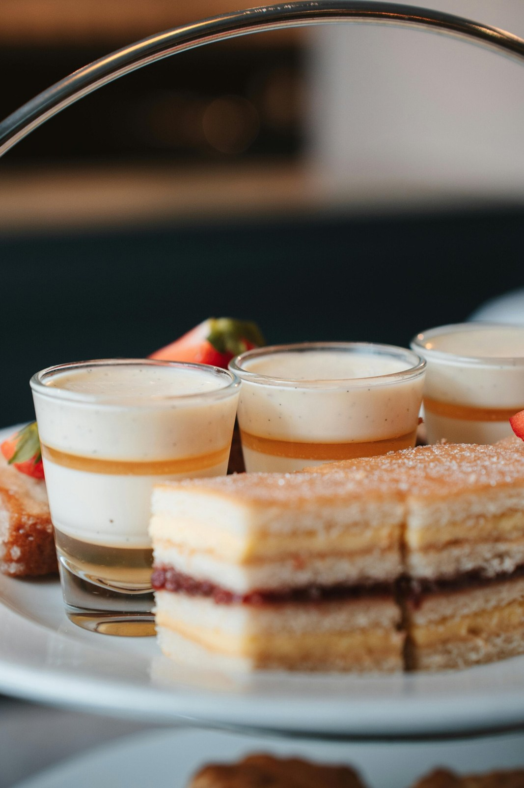
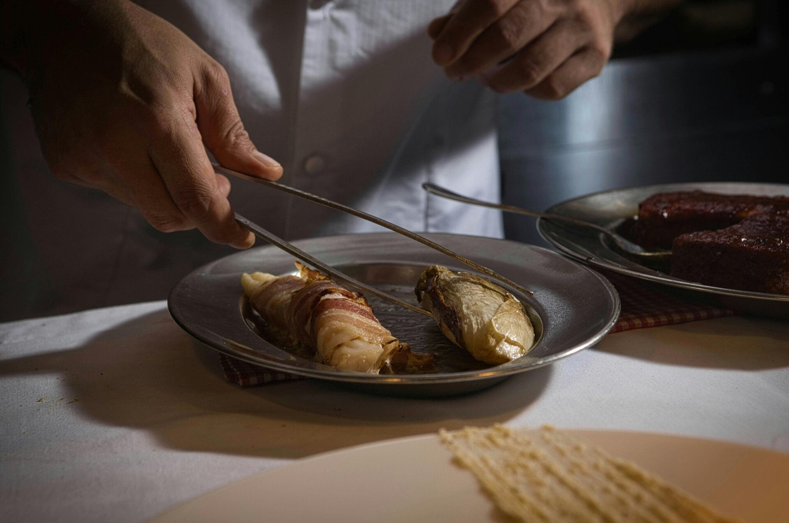
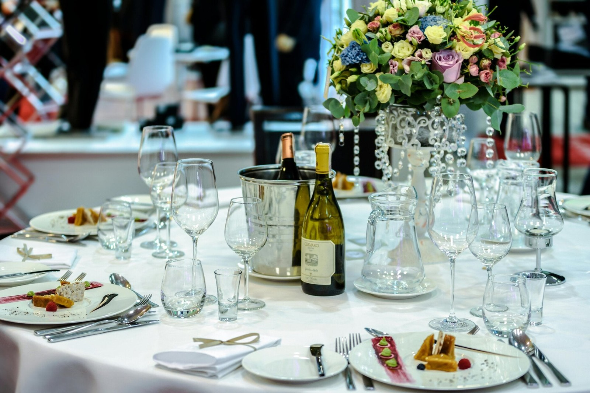
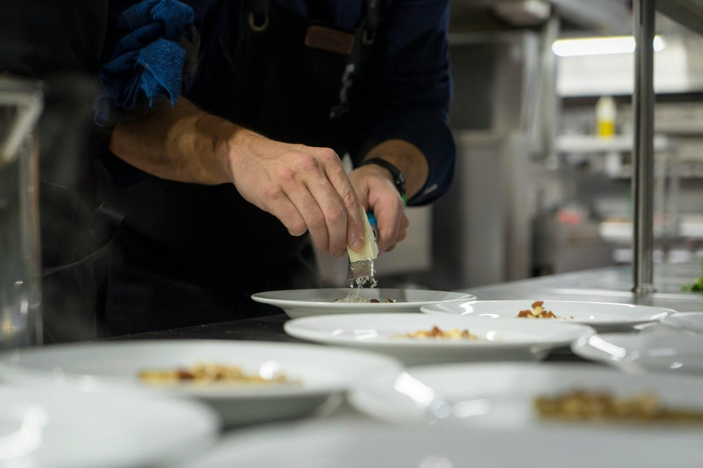

DAVID GUEZET · LA PART DU CHEF
Vos événements professionnels
Événements professionnels avec Chef Privé
Offrez à vos collaborateurs et clients une expérience culinaire inoubliable . Chef Privé, c'est l'assurance d'un événement d'affaires festif et sur mesure, où chaque détail est pensé pour refléter l'excellence de votre entreprise.
Demander un devisNos services pour vos événements d'entreprise
Chef Privé se spécialise dans l'organisation de cocktails dînatoires pour vos événements professionnels à Avignon. Que ce soit pour un lancement de produit, une soirée d'entreprise ou un séminaire, nous créons une ambiance à la fois professionnelle et festive, laissant à vos invités un souvenir mémorable.
Voir la vidéo de présentation ↗

Cocktails dînatoires sur mesure
Nous concevons des cocktails dînatoires entièrement personnalisés, en accord avec le thème et les objectifs de votre événement. Chaque plat est une invitation à la découverte des saveurs provençales.
Ambiance affaires et festive
Nos prestations sont conçues pour créer une atmosphère propice aux échanges professionnels tout en étant chaleureuse et conviviale. Un équilibre parfait pour vos invités.

Cuisine provençale d'exception
Avec 30 ans d'expérience, nous mettons en valeur les produits locaux d'Avignon et de la Provence pour une cuisine authentique et raffinée qui ravira les palais les plus exigeants.
Discutons de votre projetUne expérience unique pour vos invités
Nous voulons que les participants à vos événements professionnels se sentent privilégiés et se souviennent d'une expérience culinaire exceptionnelle. Notre objectif est de transformer chaque cocktail dînatoire en un moment de partage et de plaisir, marquant ainsi les esprits de manière positive et durable.

L'organisation de votre événement
Dès le premier contact, nous nous engageons à comprendre précisément vos attentes et à mettre en avant vos demandes spécifiques. Notre processus est transparent et collaboratif, assurant que votre vision se concrétise parfaitement le jour J. Nous sommes là pour vous conseiller et vous accompagner à chaque étape, du choix du menu à la coordination du service.
Pourquoi choisir Chef Privé pour vos événements ?
Ce qui nous distingue à Avignon, c'est notre capacité à créer des cocktails sur mesure qui racontent une histoire. Avec 30 ans d'expérience en cuisine provençale et un engagement fort envers les produits locaux, nous offrons une qualité et une authenticité inégalées. Chaque événement est une œuvre d'art culinaire, pensée pour impressionner et satisfaire les palais les plus raffinés.
